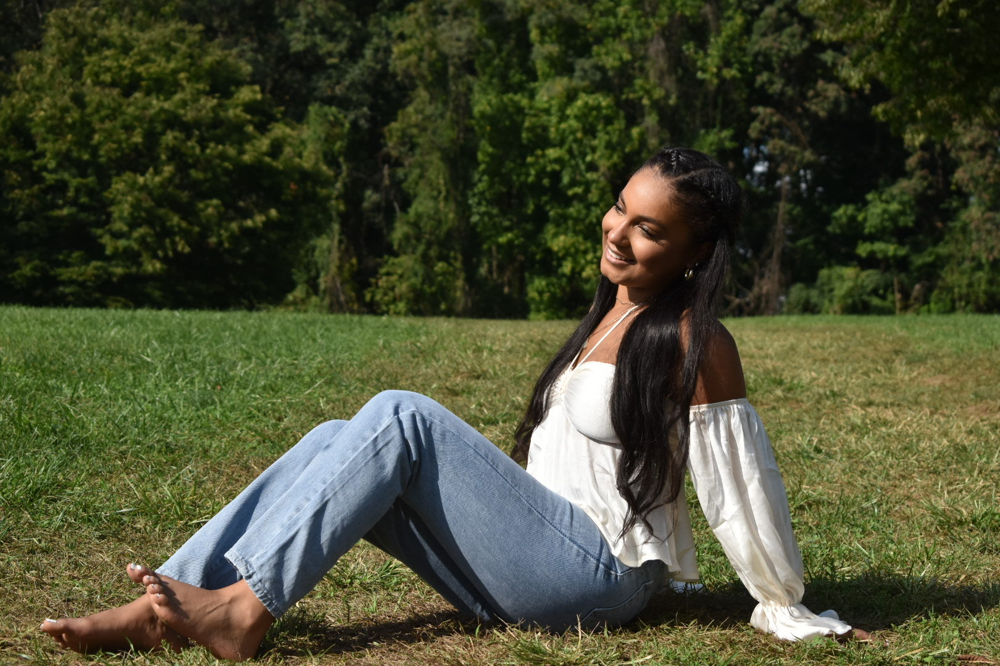

Student Journalist
As WMUC Drop the Pop reporter, I am responsible for reporting on current events in the entertainment and music industries once a week and go on air.
I develop and execute social media strategies that increase followers and engagement rates and engage with readers through social media and digital channels.
I wrote and edited articles, features, and columns for print and online platforms. I collaborated with the editorial team to develop story ideas and content strategies, and I conducted interviews and research to ensure factual accuracy and depth in reporting.
University of Maryland, Philip Merrill College of Journalism Expected Graduation: May 2026